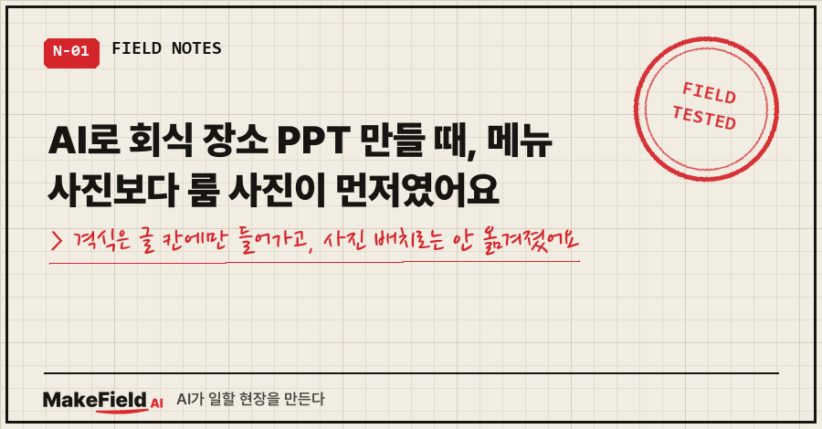
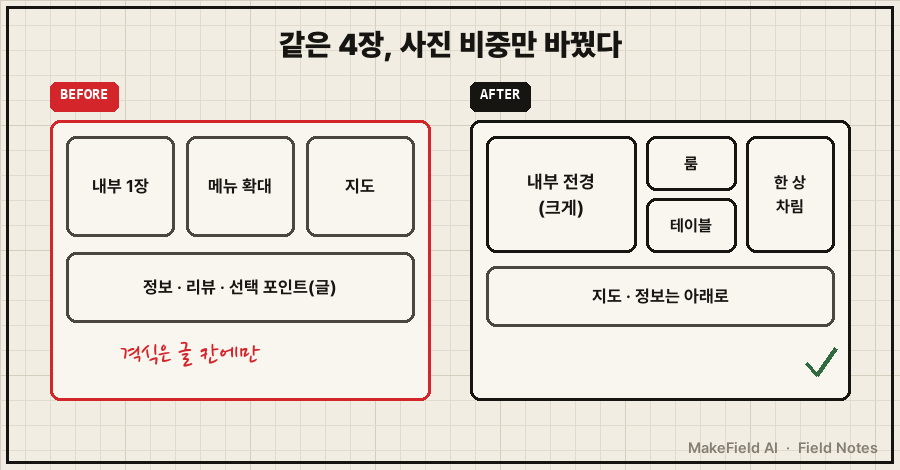
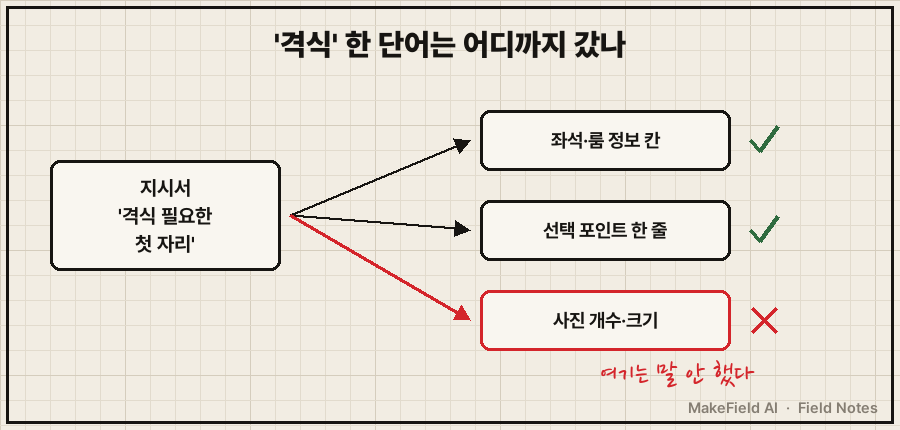
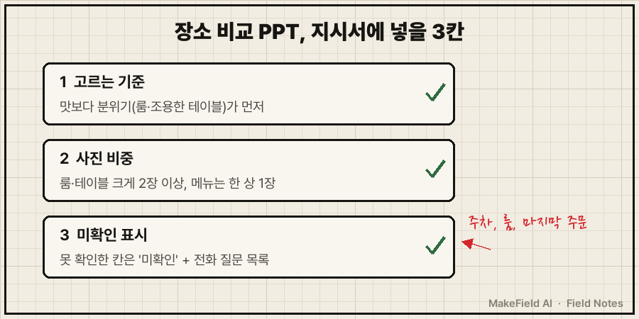

AI로 회식 장소 PPT를 만들면 정보는 금방 모아 줘요. 문제는 사진을 어떤 비중으로 넣느냐였습니다.
제 경우엔 지시서에 "격식이 필요한 자리"라고 분명히 적었는데도, 첫 판은 대표 메뉴가 확대 컷으로 들어가고 내부 사진은 한 장뿐이었어요.
핵심만 먼저: AI에게 장소 비교 자료를 시킬 땐 "보는 사람이 무엇으로 고르는지"를 글로 주는 데서 끝내지 말고, 그 기준을 사진 몇 장·어느 크기로 보여 줄지까지 적어야 한다.
저는 제조 현장에서 15년째 자동화·제어 일을 하는 엔지니어예요.
그런데 회사 생활이 기술 일만 있는 건 아니잖아요. 이번엔 그 '기술 아닌 일'에 AI를 붙여 본 얘기입니다.
1. 어떤 자리였고, 뭘 시켰나요?
윗분 두 분과 외부 손님이 함께하는 첫 저녁 자리였어요. 장소 섭외가 저한테 떨어졌죠.
후보는 제가 미리 4곳 골라 뒀어요. 회집, 장어집, 고깃집 두 곳. 그리고 지시서를 텍스트 파일 하나로 써서 AI한테 넘겼습니다. 핵심 줄만 줄여 옮기면 이래요.
- 첫 저녁자리라서 조금 격식이 필요할 수 있음
- 총 4페이지, 1장에 1곳씩. 직접 보실 수 있게 URL 꼭 명시
- 내부 인테리어 대표사진과 메뉴, 리뷰 등 보는 사람이 쉽게 선택할 수 있도록
- 주소는 무조건 (지도 스크린샷으로 인근 인프라도 대충)식당마다 한 줄 메모도 붙였어요. "내부가 깔끔", "격식에 알맞음", "별도 룸 없고 격식에는 부족하지만 맛집".
AI는 브라우저로 지도 서비스의 사진·메뉴·리뷰를 모아서 7분 만에 4장짜리 PPT를 냈어요. 4장 모두 이미지로 렌더링해 글자 잘림까지 확인하고요.
정보만 놓고 보면 빠진 칸이 없었어요.
2. 첫 판은 왜 아쉬웠을까요?
지시서의 '격식'이 글 칸에는 들어갔는데, 사진 배치로는 안 옮겨졌기 때문이에요.
첫 판은 각 장 위쪽에 사진 3장을 나란히 놨어요. 내부 사진 1장, 대표 메뉴 사진 1장, 지도 캡처 1장.
'좌석·룸' 정보 칸과 '선택 포인트' 한 줄에는 격식 얘기가 잘 들어가 있었어요. 그런데 눈에 먼저 들어오는 건 확대된 메뉴 사진이었죠.
제가 바로 보낸 말이 이거예요(식당 이름만 지웠어요).
개별 룸이나 깔끔한 분위기의 테이블 공간 등(즉 격식있게 룸식사처럼 먹을 수 있는 분위기)을
어필해야 할 건데 저렇게만 두면 어쩌나..? 안되면 사진 좀 여러 개 해놓던지..
그리고 대표메뉴도 너무 확대해서 해놓으면 느낌이 없잖아.. 사진 어필이 너무 아쉽다돌아보면 AI는 지시서를 글자 그대로 따랐어요. 저는 "내부 인테리어 대표사진"이라고 썼고, AI는 대표사진 1장을 넣었죠.
'격식'이라는 판단 기준과 '대표사진 1장'이라는 형식 지시가 같이 있으면, AI는 기준은 글로, 형식은 그대로 처리하더라고요.
사진의 비중까지 기준에 맞춰 달라는 말은 제가 안 했던 거예요.

3. 8분 뒤 나온 고친 판은 뭐가 달랐나요?
위쪽 전체 폭을 사진 4장으로 채우고, 지도와 정보는 아래로 내렸어요. 반려 후 8분 걸렸습니다.
| 항목 | 첫 판 | 고친 판 |
|---|---|---|
| 사진 구성 | 내부 1·메뉴 1·지도 1 (나란히) | 내부 전경 크게 + 룸·테이블 2장 + 한 상 차림 1장 |
| 음식 사진 | 대표 메뉴 확대 컷 | 한 상·모둠 판 전체가 보이는 사진 |
| 룸 없는 곳 | 글로 "룸 없음" | 홀 사진을 넣어 룸이 없다는 게 사진으로 보이게 |
| 지도·정보 | 위쪽 사진 줄에 지도 | 아래쪽으로 |

4. 사진만 문제였을까요? 정보 칸에도 틀린 게 있었어요
고친 판을 만들면서 AI가 스스로 정정한 게 두 개 있어요.
- 주차: 첫 판엔 "가능"이라고 적었는데 틀렸어요. 한 곳은 건물 뒤에 3~4대만 댈 수 있고, 한 곳은 전용 주차장이 없어 근처 공영주차장을 써야 했죠.
- 룸 여부: 한 고깃집은 "룸 미확인"이었는데, 다른 지도 서비스의 시설 정보에 프라이빗룸이 있다고 나와서 고쳤어요. 다만 룸 내부 사진은 끝내 못 찾아서 칸막이 좌석 사진으로 대신했고요.
사진을 더 모으다 보안 확인 창(캡차)이 뜬 장면도 있었어요. AI는 캡차를 풀지 않고 거기서 수집을 멈췄고, 다른 지도 서비스에서 같은 주소인지 확인한 뒤 그쪽 사진을 썼어요.
결말이 좀 웃긴데요.. 최종으로 정해진 곳이 바로 룸 내부 사진을 못 찾은 그 고깃집이었어요. 게다가 오후 4시에 문을 여는 곳이라 예약 전화를 그 시간에 걸어야 했죠.
그래서 마지막엔 제가 맞춰 둔 할 일 앱 알림을 AI한테 확인시켰어요. 알림은 UTC 07:00으로 저장돼 있었는데, 한국 시간으로 16:00이라 맞게 걸려 있었습니다. 그리고 전화로 물어볼 3가지를 뽑아 줬어요. 5명이 쓸 룸이 있는지, 근처 주차는 어디인지, 마지막 주문은 몇 시인지.
사진으로 확인 못 한 건 결국 전화 한 통으로 메울 일이었죠. 여러분은 AI가 만든 자료에서 "미확인"이라고 적힌 칸, 어떻게 처리하고 계세요?
5. 회식 장소 PPT 지시서에 넣을 세 줄
Anthropic의 공식 프롬프트 가이드는 지시만 주지 말고 그 지시가 왜 중요한지 맥락을 함께 주면 AI가 목표를 더 잘 알고 더 맞춤한 답을 낸다고 적어 둬요(→ https://platform.claude.com/docs/en/build-with-claude/prompt-engineering/claude-prompting-best-practices, "Add context to improve performance").
제 지시서엔 '격식'이라는 맥락은 있었는데, 그게 사진에서 어떻게 보여야 하는지가 빠져 있었던 거죠. 이번 일을 겪고 회식 장소 PPT 지시서용으로 정리한 세 줄이에요(재구성 예시이고, 당시 실제 지시문은 아니에요).
1. 고르는 기준: 맛보다 분위기(룸·조용한 테이블)가 먼저인 자리다.
2. 사진 비중: 장마다 룸·테이블 사진을 가장 크게, 2장 이상. 메뉴는 한 상 전체 1장.
3. 미확인 표시: 사진·정보로 확인 못 한 항목은 "미확인"으로 두고, 전화로 물을 질문 목록을 따로 뽑는다.
자주 받는 질문
Q. 처음부터 "룸 사진 크게"라고만 쓰면 되지 않나요?
그것도 되는데, 기준(왜 룸이 중요한지)을 같이 주는 게 나았어요. 룸이 없는 곳을 홀 사진으로 보여 준 건 제가 시킨 게 아니라, 기준을 알고 나서 AI가 스스로 고른 배치였거든요.
Q. AI가 모은 식당 정보, 그대로 믿어도 되나요?
제 경우엔 첫 판에서 주차 정보가 틀렸어요. 손님이 차로 오는 자리라면 주차·룸·영업시간 세 가지는 전화로 한 번 더 확인하는 걸 권해요.
회식 장소 PPT에서 AI가 가장 크게 놓친 건 정보 한 줄보다 강조할 자리였어요. 같은 사진 3장이라도 무엇을 크게 보여 줄지는, 그 자리에 갈 사람만 알더라고요.
팀에서 AI로 보고 자료를 만들 때, 지시서에 '보는 사람이 고르는 기준'을 넣는 법부터 같이 잡아 보고 싶다면 makefield.ai에 교육 안내가 있습니다.
출처
- Anthropic, Prompting best practices — "Add context to improve performance"(지시의 맥락·이유를 함께 주면 더 맞춤한 응답) → https://platform.claude.com/docs/en/build-with-claude/prompt-engineering/claude-prompting-best-practices
태그: #회식장소PPT #AI로PPT만들기 #AIPPT #PPT사진배치 #식당비교 #회식장소추천 #접대장소 #AI업무활용 #AI지시하는법 #프롬프트작성법 #AI오답노트 #직장인AI #보고자료만들기 #AI로일하기 #MakeFieldAI